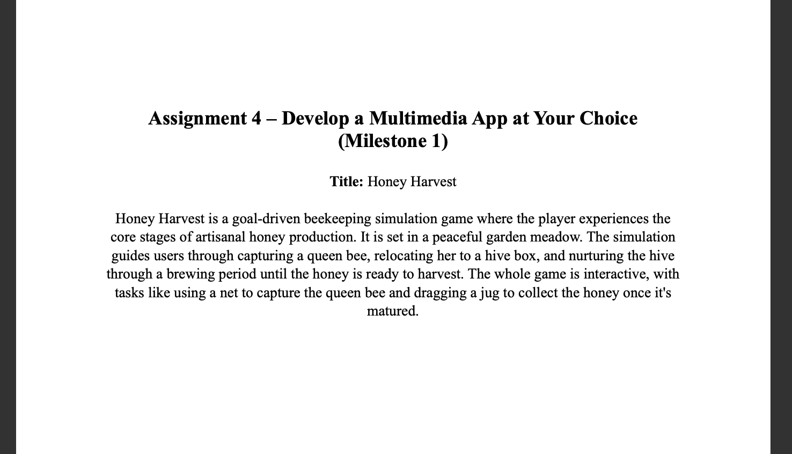
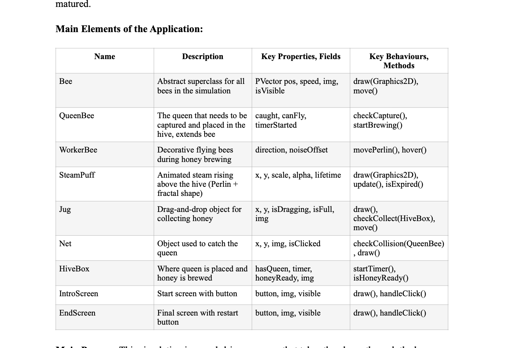

Week 1


To begin, once I had finalized the concept for Honey Harvest, I created a proposal document outlining the main user journey steps and a table mapping the code structure. This included identifying core classes, shared methods, and how user interactions would trigger different simulation states. This planning stage established a strong technical foundation and ensured the project stayed organized.